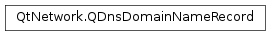

QDnsDomainNameRecord¶
Detailed Description¶
The
PySide2.QtNetwork.QDnsDomainNameRecordclass stores information about a domain name record.When performing a name server lookup, zero or more records will be returned. Each record is represented by a
PySide2.QtNetwork.QDnsDomainNameRecordinstance.See also
-
class
PySide2.QtNetwork.QDnsDomainNameRecord¶ -
class
PySide2.QtNetwork.QDnsDomainNameRecord(other) Parameters: other – PySide2.QtNetwork.QDnsDomainNameRecordConstructs an empty domain name record object.
Constructs a copy of
other.
-
PySide2.QtNetwork.QDnsDomainNameRecord.name()¶ Return type: unicode Returns the name for this record.
-
PySide2.QtNetwork.QDnsDomainNameRecord.swap(other)¶ Parameters: other – PySide2.QtNetwork.QDnsDomainNameRecordSwaps this domain-name record instance with
other. This function is very fast and never fails.
-
PySide2.QtNetwork.QDnsDomainNameRecord.timeToLive()¶ Return type: PySide2.QtCore.quint32Returns the duration in seconds for which this record is valid.
-
PySide2.QtNetwork.QDnsDomainNameRecord.value()¶ Return type: unicode Returns the value for this domain name record.
© 2018 The Qt Company Ltd. Documentation contributions included herein are the copyrights of their respective owners. The documentation provided herein is licensed under the terms of the GNU Free Documentation License version 1.3 as published by the Free Software Foundation. Qt and respective logos are trademarks of The Qt Company Ltd. in Finland and/or other countries worldwide. All other trademarks are property of their respective owners.